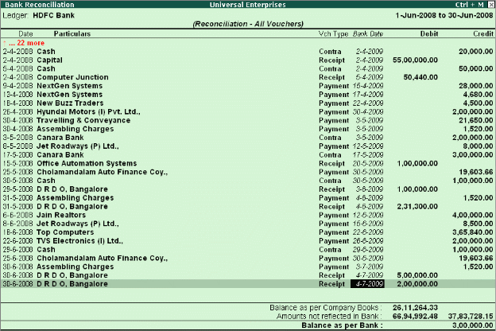

Bank Reconciliation
Tally.ERP 9 provides you the facility to reconcile the transactions of your Bank Book with the Bank Statement and instantly displays the Balance at Bank and as per the Bank Book, this facility significantly helps in planning your payouts. The reconciliation of bank transaction using the reconcile feature is very simple and easy to use, by simply entering the date of debit / credit of a particular transaction in the Bank.
To view Bank Reconciliation Statement:
Go to Gateway of Tally > Display > Account Books > Cash/Bank Book
# Select the required Bank Account and press Enter on the required month (or F2 and specify the required period from which you want to reconcile your bank accounts)
# Press F5: Reconcile
# Enter the date of clearing (date on which the transaction is being debited / credited) from the Bank Statement.
